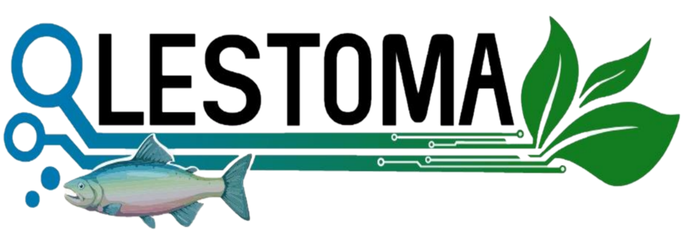

<div class="container mt-5" >
    <div class="card-columns">
        <div class="card">
            
            <div class="card-body">
                <h4 class="card-title d-flex justify-content-between">
                    
                    <p>Software para control y supervision de Biodigestores</p>
                    
                </h4>
                <div class="card text-justify">
                    <div class="card-body row">
                        <div class="col-8">
                            <p class="card-text fs-5" style="text-align: justify;">Este proyecto está planteado para la comunidad estudiantil de la universidad de Cundinamarca que esta realizando sus proyectos en la unidad agroambiental el vergel de la universidad, el proyecto se realizó simulando la instalación de mas biodigestores en las diferentes unidades agroambientales, para tener una mejor visualización de su funcionamiento.</p>
                            <p class="card-text fs-5" style="text-align: justify;">Este proyecto empezará con la elaboración de un aplicativo web para el monitoreo de los datos que vaya arrojando el prototipo del biodigestor. Todo esto con el fin de supervisar las diferentes variables para que los insumos tengas una buena reutilización de las heces de la trucha, teniendo en cuenta las metas de los objetivos a trabajar de ODS (objetivos de desarrollo sostenible)</p>
                        </div>
                        <div class="col-4 text-center">
                           
                            
                        </div>
                     
                    </div>
                  </div>                  
            </div> 
        </div>
    </div> 
</div>